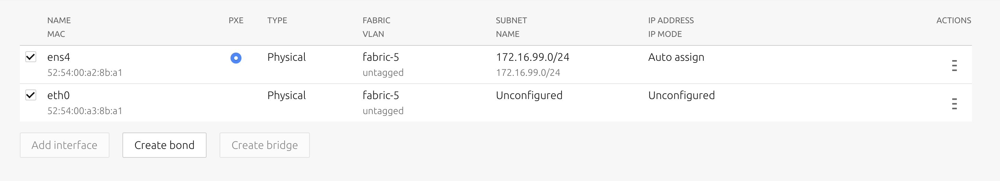
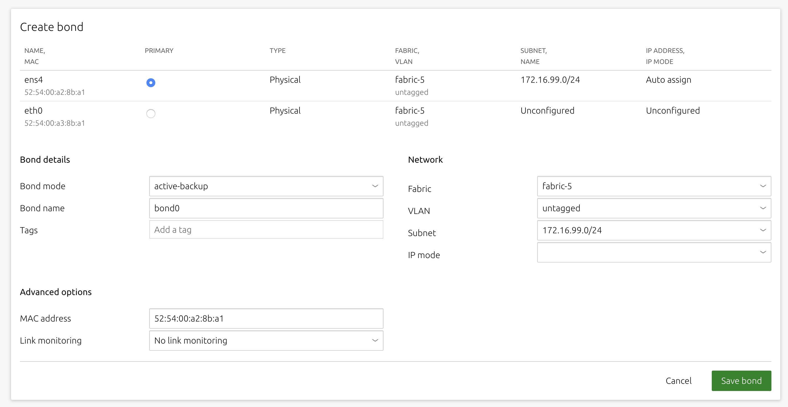

Commission machines
MAAS is built to manage machines, including the operating systems on those machines. Enlistment and commissioning are features that make it easier to start managing a machine – as long as that machine has been configured to netboot. Enlistment enables users to simply connect a machine, configure the firmware properly, and power it on so that MAAS can find it and add it.
Enlistment happens when MAAS starts; it reaches out on connected subnets to locate any nodes – that is, devices and machines – that reside on those subnets. MAAS finds a machine that’s configured to netboot (e.g., via PXE), boots that machine into Ubuntu, and then sends cloud-init user data which runs standard (i.e., built-in) commissioning scripts. The machine actually adds itself over the MAAS API, and then requests permission to send commissioning data.
Since MAAS doesn’t know whether you might intend to actually include these discovered machines in your cloud configuration, it won’t automatically take them over, but it will read them to get an idea how they’re set up. MAAS then presents these machines to you with a MAAS state of “New.” This allows you to examine them and decide whether or not you want MAAS to manage them.
When you configure a machine to netboot – and turn it on while connected to the network – MAAS will enlist it, giving it a status of “New.” You can also add a machine manually). In either case, the next step is commissioning, which boots the machine into an ephemeral Ubuntu kernel so that resource information can be gathered. You can also run custom commissioning scripts to meet your specific needs.
Questions you may have:
- How are machines commissioned?
- How can I commission NUMA and SR-IOV nodes?
- What are MAAS commissioning scripts?
- What post-commission configuration is possible?
- What is a bond interface and how do I create one?
- What is a bridge interface and how do I create one?
How machines are commissioned
When MAAS commissions a machine, the following sequence of events takes place:
- DHCP server is contacted
- kernel and initrd are received over TFTP
- machine boots
- initrd mounts a Squashfs image ephemerally over HTTP
- cloud-init runs built-in and custom commissioning scripts
- machine shuts down
The commissioning scripts will talk to the region API server to ensure that everything is in order and that eventual deployment will succeed.
MAAS chooses the latest Ubuntu LTS release as the default image for commissioning. If desired, you can select a different image in the ‘Settings’ page of the web UI, by selecting the ‘General’ tab and then scrolling down to the Commissioning section.
To commission, on the ‘Machines’ page, select a machine and choose ‘Commission’ under the ‘Take action’ drop-down menu.
 >
>
You have the option of selecting some extra parameters (checkboxes) and performing hardware tests.
These options include:
-
Allow SSH access and prevent machine powering off: Machines are normally powered off after commissioning. This option keeps the machine on and enables SSH so you can access the machine.
-
Retain network configuration: When enabled, preserves any custom network settings previously configured for the machine. See Networking for more information.
-
Retain storage configuration: When enabled, preserves any storage settings previously configured for the machine. See Storage for more details.
-
Update firmware: Runs scripts tagged with ‘update_firmware. See Testing scripts for more details.
-
Configure HBA: Runs scripts tagged with ‘configure_hba’. As above, see Testing scripts for further details.
>
Click the Hardware tests field to reveal a drop-down list of tests to add and run during commissioning. See Hardware testing) for more information on hardware testing scripts.
Finalise the directive by hitting ‘Commission machine’.
While commissioning, the machine status will change to reflect this state (Commissioning). MAAS discovers the machine’s network topology. MAAS then prompts a machine network interface to connect to the fabric, VLAN, and subnet combination for configuration. Usually, MAAS assigns a static IP address out of the reserved IP range for the subnet (‘Auto assign’ mode). The next section details several assignment modes.
See MAAS CLI for how to commission a machine with the CLI.
Once commissioned, a machine’s status will change to Ready, and an extra tab for the machine called ‘Commissioning’ will become available. This tab contains the results of the scripts executed during the commissioning process.
Once commissioned, you may consider creating or applying a tag to this machine. The next step is deployment.
Commission NUMA and SR-IOV nodes
If you are using the NUMA architecture, MAAS version 2.7 guarantees that machines are assigned to a single NUMA node that contains all the machine’s resoures. Note that you must recommission NUMA/SR-IOV machines that were previously commissioned under version 2.6 or earlier.
When using these nodes, you can specify a node index for interfaces and physical block devices. MAAS will display the NUMA node index and details, depending upon your configuration, to include the count of NUMA nodes, number of CPU cores, memory, NICs, and node spaces for bonds and block devices. You can also filter machines by CPU cores, memory, subnet, VLAN, fabric, space, storage, and RAID, among others.
MAAS commissioning scripts
When a machine boots, MAAS first instructs it to run cloud-init to set up SSH keys (during commissioning only), set up NTP, and execute a script that runs other commissioning scripts. Currently, the sequence of MAAS-provided commissioning scripts proceeds like this:
-
00-maas-00-support-info: MAAS gathers information that helps to identify and characterize the machine for debugging purposes, such as the kernel, versioning of various components, etc.
-
00-maas-01-lshw: this script pulls system BIOS and vendor info, and generates user-defined tags for later use.
-
00-maas-02-virtuality: this script checks whether the machine being commissioning is a virtual machine, which may affect how MAAS interacts with it.
-
00-maas-03-install-lldpd: this script installs the link layer discovery protocol (LLDP) daemon, which will later capture networking information about the machine. The lldpd needs to be installed early because it requires about a 60-second delay before running.
-
00-maas-04-list-modaliases: this script figures out what hardware modules are loaded, providing a way to autorun certain scripts based on which modules are loaded.
-
00-maas-05-dhcp-unconfigured-ifaces: MAAS will want to know all the ways the machine is connected to the network. Only PXE comes online during boot; this script brings all the other networks online so they can be recognized.
-
00-maas-06-get-fruid-api-data: this script gathers information for the Facebook wedge power type.
-
00-maas-08-serial-ports: this script lists what serial ports are available on the machine.
-
40-maas-01-network-interfaces: this script is just used to get the IP address, which can then be associated with a VLAN/subnet.
-
50-maas-01-commissioning: this script is the main MAAS tool, gathering information on machine resources, such as storage, network devices, CPU, RAM, etc. We currently pull this data using lxd: We use a Go binary built from lxd source that just contains the minimum source to gather the resource information we need.
-
99-maas-01-capture-lldp: this script gathers LLDP network information to be presented on the logs page; this data is not used by MAAS at all.
-
99-maas-05-kernel-cmdline: this script is used to update the boot devices; it double-checks that the right boot interface is selected.
Commissioning runs the same dozen or so scripts as enlistment, gathering all the same information, but with some additional caveats:
-
Commissioning also runs user-supplied commissioning scripts, if present. Be aware that these scripts run as root, so they can execute any system command.
-
Commissioning runs test scripts which are not run during enlistment.
In both enlistment and commissioning, MAAS uses either the MAC address or the UUID to identify machines. Currently, because some machine types encountered by MAAS do not use unique MAC addresses, we are trending toward using the UUID.
Post-commission configuration
Once commissioned, you can configure the machine’s network interface(s). Specifically, when a machine’s status is either ‘Ready’ or ‘Broken’, interfaces can be added/removed, attached to a fabric and linked to a subnet, and provided an IP assignment mode. Tags can also be assigned to specific network interfaces (see Tags for network interfaces).
From a machine’s ‘Interfaces’ page, click the menu icon for the interface to be edited and select ‘Edit Physical’ from the resulting menu:
 >
>
The following window will appear:
 >
>
Four modes determine how a subnet address is assigned when MAAS deploys the machine. You can select one of these modes by clicking on the ‘IP mode’ drop-down menu.
-
Auto assign: MAAS will assign a random static address (
iface eth0 inet static). The pool of available addresses depends on whether the subnet is managed or unmanaged (see Subnet management). -
Static assign: The administrator will specify a static address using a secondary field.
-
DHCP: The machine leases a dynamic IP address, via either MAAS-managed DHCP or an external DHCP server.
-
Unconfigured: The interface is not configured.
Press the ‘Save’ button to apply the changes.
See Concepts and terms for the definitions of reserved range types and MAAS CLI - advanced tasks to learn how to change the IP-assignment mode of a network interface using the CLI.
Bond interfaces and how to create one
A bond interface is used to aggregate two or more physical interfaces into a single logical interface. Combining multiple network connections in parallel can increase network throughput beyond what a single NIC will allow. It also provides some redundancy in case one of the NICs should fail. More information about the theory behind bonded NICs is found in the relevant IEEE standard.
In the case of our MAAS hospital example, bond interfaces would probably be used in machines dealing with “Prescriber controls” and “Nursing meds.” Medication administration and reconciliation can involve a significant amount of data that must be communicated in a near real-time way: prescriptions must be verified and corrected, dosages must be monitored and frequently changed or paused, and complications and side-effects checked constantly.
A bond is created by selecting more than one interface and clicking the now-active ‘Create bond’ button:
>
After clicking the ‘Create bond’ button, the bond configuration pane will appear.
From the bond configuration pane, you can rename the bond, select a bond mode (see below), assign a MAC address to the aggregate device and attach one or more tags.
The interfaces aggregated into the bond interface are listed below the ‘Tags’ field. Use the ‘Primary’ column to select the interface to act as the primary device.
>
You can select from the following bonding modes on the ‘Bond mode’ drop-down menu:
-
balance-rr: Transmit packets in sequential order from the first available slave through to the last. This mode provides load balancing and fault tolerance.
-
active-backup: Only one slave in the bond is active. A different slave becomes active if, and only if, the active slave fails. The bond’s MAC address is externally visible on only one port (network adaptor) to avoid confusing the switch.
-
balance-xor: Transmit based on the selected transmit hash policy. The default policy is simple, which means that an XOR operation selects packages. This XOR compares the source MAC address and the resultant XOR between the destination MAC address, the packet type identifier, and the modulo slave count.
-
broadcast: Transmit everything on all slave interfaces. This mode provides fault tolerance.
-
802.3ad: Creates aggregation groups that share the same speed and duplex settings. This mode utilises all slaves in the active aggregation, following the IEEE 802.3ad specification.
-
balance-tlb: Adaptive transmit load balancing, channel bonding that does not require any special switch support.
-
balance-alb: Adaptive load balancing, includes balance-tlb plus receive load balancing (rlb) for IPV4 traffic. This mode does not require any special switch support. ARP negotiation achieves load balancing in this case.
Press the ‘Save’ button when you’re done.
[note] The MAC address defaults to the MAC address of the primary interface. [/note]
Bridge interfaces and how to create one
A network bridge may be useful if you intend to put virtual machines or containers on the machine. You can create a bridge by selecting an interface and clicking the now-active ‘Create bridge’ button. A form will appear that allows you to configure a MAC address, STP, and an appropriate tag.
 >
>
Press the ‘Save’ button when you’re done.
See CLI Interface Management for details on how you can configure interfaces from the command line.